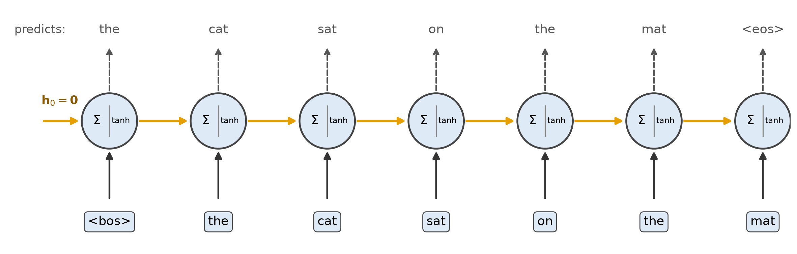
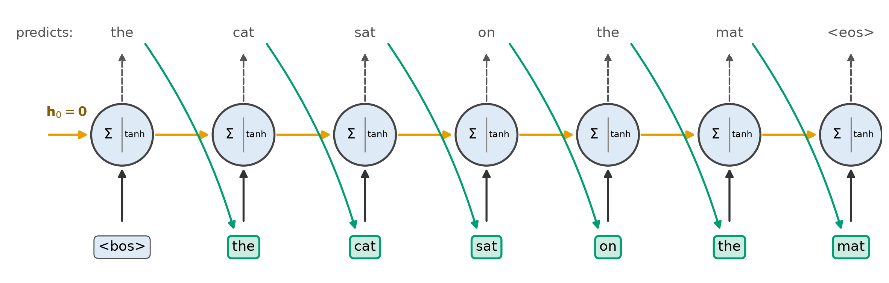
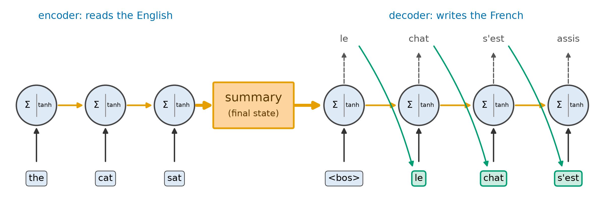
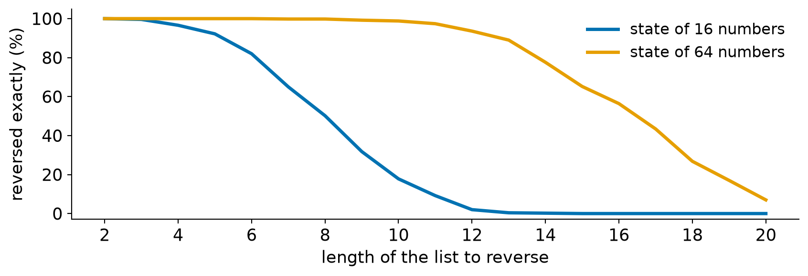

Advanced Machine Learning
This slide deck is still under active development. Expect changes before it is finalized.
<bos> and an empty state, feed each prediction back in, stop at <eos>A language model, run in a loop
So far the model has always been handed real text and asked what comes next.
The question:
How do we get a whole sentence out of a model that only predicts one next word?
Give the model only a start token, and feed each word it predicts back in as the next input, until it predicts an end token.
<bos> and <eos> markers from earlier

<bos> and an empty state (all zeros). Each prediction (green) is fed back in as the next input<eos>. During training we feed the real word (called teacher forcing), but here there is no real text to feed| Step | Input | Next-word probabilities | We pick |
|---|---|---|---|
| 1 | <bos> | the 1.00 | the |
| 2 | the | cat 0.45, dog 0.26, horse 0.13 | cat |
| 3 | cat | sat 0.48, ran 0.20, slept 0.17 | sat |
| 4 | sat | on 1.00 | on |
| 5 | on | the 1.00 | the |
| 6 | the | mat 0.42, bed 0.22, floor 0.13 | mat |
| 7 | mat | <eos> 1.00 | <eos> |
@torch.no_grad()
def generate(model, max_len=20):
token, state, words = BOS, None, [] # start token, empty state
for _ in range(max_len):
states, state = model.rnn(model.embedding(token), state) # one step of the RNN
probs = torch.softmax(model.out(states[:, -1]), dim=-1) # next-word probabilities
token = probs.argmax(dim=-1, keepdim=True) # pick a word (or sample one)
if token.item() == EOS:
break
words.append(token.item()) # the pick is also the next input
return wordsstate=None means all zeros, and the returned state is passed back in, so the memory carries over from step to steptoken is the model’s own pick, not a word from the dataAt every step the model gives a probability for each possible next word. After “the”, it said: cat 0.45, dog 0.26, horse 0.13, and so on. Two ways to choose:
Five runs of the same trained model from <bos>. Every word in a run is picked the way the second column says.
| Run | How we pick | Sentence written |
|---|---|---|
| 1 | Most likely | the cat sat on the mat |
| 2 | Sample | the horse sat on the garden |
| 3 | Sample | the cat sat on the mat |
| 4 | Sample | the cat slept on the mat |
| 5 | Sample | the dog ran on the mat |
A language model writes by predicting one word at a time and feeding each word back in.
Starting the loop from what we read
Translate “the rabbit slept on the floor” into French.
<bos> and an empty state, so on its own it writes anythingThe question:
How do we make a generator write about one particular input?
Read the input with one RNN, and start the generator from the final state of that RNN instead of from an empty state.

<bos> and that state, and feeds its own words back in| Language model | Sequence to sequence | |
|---|---|---|
| First input | <bos> |
<bos> |
| Starting state | All zeros (nothing read) | The encoder’s summary of the input |
| Each step | Predict the next word, feed it back in | Predict the next word, feed it back in |
| Stops when | It predicts <eos> |
It predicts <eos> |
| Writes | Any sentence | A sentence about this input |
| The decoder starts from | It writes |
|---|---|
| An empty state: 64 numbers, all 0 | le chat a couru sur le jardin |
| 64 numbers from the encoder, after reading “the rabbit slept on the floor” | le lapin a dormi sur le sol |
| 64 numbers from the encoder, after reading “the pig jumped on the bridge” | le cochon a sauté sur le pont |
| English (unseen) | Model’s French | Right? |
|---|---|---|
| the pig jumped on the bridge | le cochon a sauté sur le pont | yes |
| the rabbit slept on the floor | le lapin a dormi sur le sol | yes |
| the dog played on the garden | le chien a joué sur le toit | no, it is jardin |
class Seq2Seq(nn.Module):
def __init__(self, src_vocab, tgt_vocab, dim, hidden):
super().__init__()
self.src_embedding = nn.Embedding(src_vocab, dim)
self.encoder = nn.GRU(dim, hidden, batch_first=True)
self.tgt_embedding = nn.Embedding(tgt_vocab, dim)
self.decoder = nn.GRU(dim, hidden, batch_first=True)
self.out = nn.Linear(hidden, tgt_vocab)
def forward(self, src, tgt_in):
_, state = self.encoder(self.src_embedding(src)) # read the input
states, _ = self.decoder(self.tgt_embedding(tgt_in), state) # start from its state
return self.out(states)nn.GRU returns is its final state. The second thing it takes is the state to start fromstate from the encoder’s final state instead of None| Input | Encoder | Decoder writes | Trained on pairs of |
|---|---|---|---|
| English sentence | RNN | French sentence | English and French |
| A long article | RNN | A short summary | Articles and summaries |
| A question | RNN | An answer | Questions and answers |
| An image | CNN | A caption | Images and captions |

A sequence-to-sequence model is a language model whose starting state is a summary of the input.
| Use | Input | Starting state | What we use |
|---|---|---|---|
| Classify a sequence | The whole text | Zeros | The last state |
| Language model (training) | The real text | Zeros | A prediction at every step |
| Generate text | <bos>, then its own words |
Zeros | Each prediction, fed back in |
| Sequence to sequence | <bos>, then its own words |
The encoder’s summary | Each prediction, fed back in |
<bos> and an empty state, feed each predicted word back in, and stop at <eos>. Training feeds the real word instead (teacher forcing)CST463 · Advanced Machine Learning